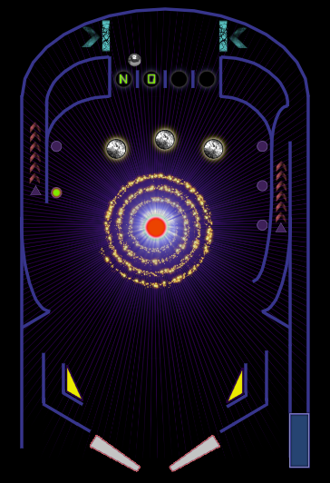

NOVA PINBALL
Copyleft 2015 Wesley Werner
Your mission: Make the star go nova. There are in-game hints that point out the next target to achieve your goal.

HOW TO PLAY
- The
UP,DOWNandSPACEkeys navigate the menus. - The
LEFT + RIGHT SHIFTkeys control the flippers - The
SPACEkey launches the ball. It also nudges the table if a ball is in play. - If you nudge too much the table will tilt.
- Your first ball starts in safe mode.
TABLE FEATURES
- Mission hints are given during play, in the LED display, and as flashing light goals.
- Safe Mode: A 30 second grace period where a free ball is launched on a drain.
- Multi-ball: Complete the "Matter Jettison" mission to release the second bonus ball.
- Tilt: You don't score points and the flippers won't move until a ball is drained.
GOOD TO KNOW
- Written in LUA with LOVE, a 2D game framework
- Powered by kittens
CREDITS
Thanks goes to these people for letting me use their work:
-
Advanced LED Board-7 Font by Sizenko Alexander
- Erbos Draco Open NBP Font by made by Nate Halley
- Love Frames by KennyShields (used in the pinball table editor)
ENGINE
This game is created on top of the Nova Pinball Engine, also available under the same license.
LICENSE
This program is free software: you can redistribute it and/or modify it under the terms of the GNU General Public License as published by the Free Software Foundation, either version 3 of the License, or any later version.
This program is distributed in the hope that it will be useful, but WITHOUT ANY WARRANTY; without even the implied warranty of MERCHANTABILITY or FITNESS FOR A PARTICULAR PURPOSE. See the GNU General Public License for more details.
You should have received a copy of the GNU General Public License along with this program. If not, see http://www.gnu.org/licenses/.